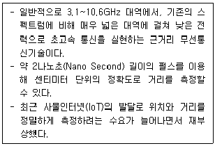
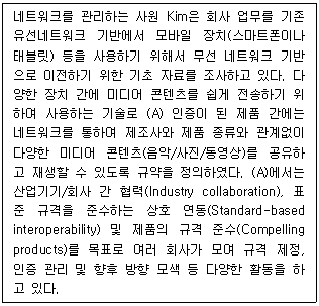
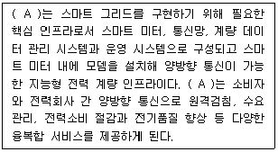
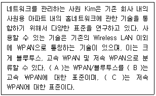
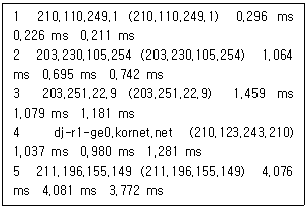
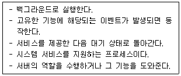
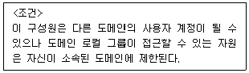
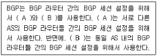
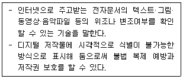

네트워크관리사-1급 (2021-10-24 기출문제)
1과목: TCP/IP
1. Subnet Mask에 대한 설명으로 옳지 않은 것은?
- 각 IP Address의 Broadcasting 범위를 지정하기 위해 사용된다.
- 모든 IP Address의 Subnet Mask가 동일하다.
- 하나의 네트워크 Class를 여러 개의 네트워크 Segment로 분리하여 IP Address를 효율적으로 사용할 수 있게 한다.
- 하나의 네트워크 IP Segment란 Broadcasting Boundary를 의미한다.
(정답률: 90%)

2. IPv6에 대한 설명으로 잘못된 것은?
- IPv6는 IPng의 일부분으로 여기서 ng는 Next Generation을 의미한다.
- IPv6가 필요하게 된 동기는 현재 인터넷 사용자가 급증하기 때문이다.
- IPv6는 32bit로 구성되어 있다.
- IPv6는 암호처리 및 사용자 인증기능이 내장 되어 있다.
(정답률: 91%)
3. IP 프로토콜의 헤더 체크섬(Checksum)에 대한 설명 중 올바른 것은?
- 체크섬 필드를 ′0′으로 하여 계산한다.
- 네트워크에서 존재하는 시간을 나타낸다.
- 데이터 그램의 총 길이를 나타낸다.
- IP 헤더에 대해서만 포함되며 데이터 필드를 포함한다.
(정답률: 64%)
4. 호스트의 IP Address를 호스트와 연결된 네트워크 접속장치의 물리적 주소로 번역해주는 프로토콜은?
- TCP
- ARP
- IP
- UDP
(정답률: 92%)
5. 네트워크 ID가 ′203.253.55.0′인 네트워크에서 각 서브넷은 25개 호스트가 필요하고 가장 많은 서브넷 유지를 원할 때 가장 적절한 서브넷 마스크 값은?
- 255.255.255.240
- 255,255.255.248
- 255.255.255.224
- 255.255.255.192
(정답률: 78%)
6. Multicast용으로 사용되는 IP Address는?
- 163.152.71.86
- 128.134.2.51
- 213.122.1.45
- 231.159.61.29
(정답률: 66%)
7. UDP에 대한 설명 중 올바른 것은?
- OSI 7 Layer에서 전송 계층에 속하며, 데이터그램 방식으로 비연결형이다.
- 인터넷상에서 전자우편(E-Mail)의 전송을 규정한다.
- 네트워크의 구성원에 패킷을 보내기 위한 하드웨어 주소를 정한다.
- 네트워크와 Application Layer 사이의 신뢰적 데이터 전송을 제공한다.
(정답률: 90%)
8. DNS 서버는 기본적으로 리소스 레코드(Resource Record)에 호스트들과 서브 도메인 정보를 저장하는 존(Zone) 데이터베이스를 유지하고 있다. DNS 서버에서 사용하는 리소스 레코드 종류에서 IP Address에 대한 DNS 이름을 제공하기 위해 사용되는 리소스 레코드는?
- PTR(PoinTer Record)
- NS(Name Server)
- SOA(Start of Authority)
- A(Address)
(정답률: 37%)
9. SMTP에 대한 설명 중 올바른 것은?
- 네트워크의 구성원에 패킷을 보내기 위한 하드웨어 주소를 정한다.
- TCP/IP 프로토콜에서 데이터의 전송 서비스를 규정한다.
- TCP/IP 프로토콜의 IP에서 접속 없이 데이터의 전송을 수행하는 기능을 규정한다.
- 인터넷상에서 전자우편(E-Mail)의 전송을 규정한다.
(정답률: 72%)
10. SSH 프로토콜은 외부의 어떤 공격을 막기 위해 개발 되었는가?
- Sniffing
- DoS
- Buffer Overflow
- Trojan Horse
(정답률: 73%)
11. TCP/IP 망을 기반으로 하는 다양한 호스트간 네트워크 상태 정보를 전달하여 네트워크를 관리하는 표준 프로토콜은?
- FTP
- ICMP
- SNMP
- SMTP
(정답률: 64%)
12. OSPF에 대한 설명으로 옳지 않은 것은?
- 기업의 근거리 통신망과 같은 자율 네트워크 내의 게이트웨이들 간에 라우팅 정보를 주고받는데 사용되는 프로토콜이다.
- 대규모 자율 네트워크에 적합하다.
- 네트워크 거리를 결정하는 방법으로 홉의 총계를 사용한다.
- OSPF 내에서 라우터와 종단국 사이의 통신을 위해 RIP가 지원된다.
(정답률: 65%)
13. TCP 세션의 성립에 대한 설명으로 옳지 않은 것은?
- 세션 성립은 TCP Three-Way Handshake 응답 확인 방식이라 한다.
- 실제 순서번호는 송신 호스트에서 임의로 선택된다.
- 세션 성립을 원하는 컴퓨터가 ACK 플래그를 ′0′으로 설정하는 TCP 패킷을 보낸다.
- 송신 호스트는 데이터가 성공적으로 수신된 것을 확인하기까지는 복사본을 유지한다.
(정답률: 65%)
14. TFTP에 대한 설명으로 올바른 것은?
- TCP/IP 프로토콜에서 데이터의 전송 서비스를 규정한다.
- 인터넷상에서 전자우편(E-mail)의 전송을 규정한다.
- UDP 프로토콜을 사용하여 두 호스트 사이에 파일 전송을 가능하게 해준다.
- 네트워크의 구성원에 패킷을 보내기 위한 하드웨어 주소를 정한다.
(정답률: 70%)
15. TCP의 프로토콜 이름과 일반 사용(Well-Known) 포트 연결로 옳지 않은 것은?
- SMTP : 25
- HTTP : 80
- POP3 : 100
- FTP-Data : 20
(정답률: 73%)
16. IP Address 할당에 대한 설명으로 옳지 않은 것은?
- 198.34.45.255는 개별 호스트에 할당 가능한 주소이다.
- 127.0.0.1은 로컬 Loopback으로 사용되는 특별한 주소이다.
- 172.16.0.0은 네트워크를 나타내는 대표 주소이므로 개별 호스트에 할당할 수 없다.
- 220.148.120.256은 사용할 수 없는 주소이다.
(정답률: 62%)
2과목: 네트워크 일반
17. IGMP에 대한 설명 중 올바른 것은?
- 시작지 호스트에서 여러 목적지 호스트로 데이터를 전송할 때 사용된다.
- TCP/IP 프로토콜의 IP에서 접속없이 데이터의 전송을 수행하는 기능을 규정한다.
- 네트워크의 구성원에 패킷을 보내기 위한 하드웨어 주소를 정한다.
- IP에서의 오류(Error) 제어를 위하여 사용되며, 시작지 호스트의 라우팅 실패를 보고한다.
(정답률: 50%)
18. 물리적 회선을 공유하면서도 회선이 할당된 것처럼 동작하며, 연결설정, 데이터전송, 연결해제 단계를 거치는 방식은?
- 회선교환방식
- 데이터그램방식
- 가상회선교환방식
- 메시지교환방식
(정답률: 57%)
19. 아래에서 설명하는 무선 통신 기술의 명칭으로 올바른 것은?

- Bluetooth
- Zigbee
- RFID(Radio Frequency Identification)
- UWB(Ultra Wide-Band)
(정답률: 60%)
20. 베이스밴드(Baseband) 시스템보다 브로드밴드(Broadband) 시스템이 더 많은 데이터를 전송할 수 있는 이유는?
- 여러 개의 주파수로 여러 개의 채널에 접근할 수 있기 때문
- 양방향 신호흐름을 지원할 수 있기 때문
- 서버에 데이터를 저장하였다가 한 번에 데이터를 전송할 수 있기 때문
- 한 번에 한 개의 신호 또는 한 개의 채널을 전송할 수 있기 때문
(정답률: 61%)
21. 광통신 전송로의 특징으로 옳지 않은 것은?
- 긴 중계기 간격
- 대용량 전송
- 비전도성
- 협대역
(정답률: 64%)
22. 전송한 프레임의 순서에 관계없이 단지 손실된 프레임만을 재전송하는 방식은?
- Selective-repeat ARQ
- Stop-and-wait ARQ
- Go-back-N ARQ
- Adaptive ARQ
(정답률: 78%)
23. 아날로그 데이터를 디지털 전송 신호로 보낼 때 양자화 시키는 일반적인 기법은?
- PCM
- FSK
- QPSK
- PSK
(정답률: 61%)
24. 다음 지문에서 설명하는 기술은 무엇인가?

- Digital Living Network Alliance
- Dedicated Short Range Communication
- Smart Grid Networking
- Network Function Virtualization
(정답률: 40%)
25. MSPP (Multi Service Provisioning Platform)에 대한 설명이 올바르지 않는 것은 무엇인가?
- MSPP 장비는 단일 장비상에서 전용선, 이더넷, SAN, ATM 등의 서비스 제공이 가능한 복합서비스 장비이다.
- MSPP 망은 point-point 망, point-multi point 망, 링형 망 등 다양한 입력망과 다양한 계층의 데이터를 단일한 장비를 통해 다중화시켜 전송할 수 있는 망이다.
- MSPP는 BLSR, UPSR 등의 회선 복구 알고리즘을 사용한다.
- MSPP의 GFC 기술은 복수의 물리적 신호를 그루핑, 이더넷 트래픽을 전달하기 위해 링크의 물리적 SDH 신호를 논리적으로 그루핑하는 다중화 기술이다.
(정답률: 50%)
26. 다음 설명의 (A)에 들어갈 알맞은 용어는 무엇인가?

- DR (Demand Response)
- EMS (Energy Management System)
- AMI (Advanced Metering Infrastructure)
- TDA (Transmission & Distribution Automation)
(정답률: 39%)
27. 다음은 Home Network에 사용되는 기술 중 WPAN(Wireless Personal Area Network)에 대한 설명이다. (A), (B), (C) 안에 들어갈 표준을 순서대로 나열한 것은 무엇인가?

- 802.11.1 – 802.11.3 – 802.11.4
- 802.11a – 802.11b – 802.11c
- 802.15.1 – 802.15.3 – 802.15.4
- 802.16.1 – 802.16.3 – 802.16.4
(정답률: 46%)
3과목: NOS
28. 웹서버 관리자인 Kim 대리는 아파치를 이용하여 웹 서버를 구축하였다. 아파치 웹 서버의 기본 설정 파일인 ′httpd.conf′ 파일의 항목에 대한 설명이 옳지 않은 것은?
- ServerTokens : 웹 서버 헤더에 제공되는 정보의 수준을 지정한다.
- ServerAdmin : 웹 서버에 문제가 발생시 보낼 관리자의 이메일주소를 지정한다.
- DocumentRoot : 웹 문서가 위치하는 디렉터리를 지정한다.
- AccessFileName : 웹 서버의 에러로그 기록파일을 지정한다.
(정답률: 37%)
29. Linux 시스템 관리자인 PARK 사원은 IP 주소가 ′a.b.c.d′이고, 사용자명/패스워드가 ′admin/p@ssw0rd′인 시스템의 삼바로 공유된 ′data′ 디렉터리를 ′/net′으로 사용하고자 한다. 해당 작업에 필요한 명령어와 옵션으로 올바른 것은?
- mount -a smbfs -j username=admin,password=p@ssw0rd //a.b.c.d/data /net
- mount -t ntfs -j username=admin,password=p@ssw0rd //a.b.c.d/data /net
- mount -a smbfs -o username=admin,password=p@ssw0rd //a.b.c.d/data /net
- mount -t smbfs -o username=admin,password=p@ssw0rd //a.b.c.d/data /net
(정답률: 27%)
30. 서버 관리자 Park 대리는 메일 서버 프로그램으로 샌드메일(sendmail)을 이용하고 있다. 샌드메일과 관련한 주요 파일에 대한 설명으로 옳지 않은 것은?
- ′/etc/mail/sendmail.cf′ : 샌드메일의 환경설정을 기록한 파일이다.
- ′etc/mail/local-host-names′ : 메일 서버에 사용하는 호스트 이름을 설정하는 파일이다.
- ′/etc/mail/access′ : 메일서버로 접근하는 호스트나 도메인의 접근을 제어하는 파일이다.
- ′/etc/aliases′ : 특정 계정으로 들어오는 메일을 다른 게정으로 전송되도록 설정하는 파일이다.
(정답률: 19%)
31. 서버 담당자 Jung 대리는 Windows Server 2016의 이벤트 뷰어를 활용하여 감사 정책에 따른 로그 정보를 확인하고자 한다. 이벤트 수준의 항목으로 옳지 않은 것은?
- 디버그
- 오류
- 경고
- 위험
(정답률: 46%)
32. 서버 담당자 Hong 사원은 Windows Server 2016의 성능 모니터를 통해 시스템의 성능을 모니터링 한다. 성능 모니터를 통하여 모니터링할 수 있는 항목으로 옳지 않은 것은?
- 프로세서
- 메모리
- 네트워크 인터페이스
- 주변장치
(정답률: 55%)
33. Linux에서 기본적으로 생성되는 디렉터리로 옳지 않은 것은?
- /etc
- /root
- /grep
- /home
(정답률: 67%)
34. Linux 시스템에서 ′-rwxr-xr-x′와 같은 퍼미션을 나타내는 숫자는?
- 755
- 777
- 766
- 764
(정답률: 58%)
35. Linux 시스템의 vi 에디터에 대한 설명으로 옳지 않은 것은?
- 입력모드로 전환은 ′i′를 눌러서 한다.
- 편집모드로 전환하기 위해서는 ′Esc′ 키를 누르고 ′:′(콜론)을 입력하면 된다.
- 기능키 ′A′는 입력모드로 전환되어 현재 라인의 끝에 입력이 된다.
- 기능키 ′a′는 입력모드로 전환되어 현재 라인의 위 라인에 입력이 된다.
(정답률: 43%)
36. Windows Server 2016에서 ′www.icqa.or.kr′의 IP Address를 얻기 위한 콘솔 명령어는?
- ipconfig www.icqa.or.kr
- netstat www.icqa.or.kr
- find www.icqa.or.kr
- nslookup www.icqa.or.kr
(정답률: 55%)
37. Linux에서 프로세스의 상태를 확인하고자 할 때 사용하는 명령어는?
- ps
- w
- at
- cron
(정답률: 60%)
38. 서버 담당자 Lee 사원은 Windows Server 2016에 보안과 관련한 맞춤형 설정을 적용하기 위해 보안 템플릿을 사용하려고 한다. 보안 템플릿에 의해 영향을 받는 항목으로 옳지 않은 것은?
- 이벤트 로그
- 파일 시스템
- 레지스트리
- 시스템 사용자
(정답률: 27%)
39. Linux 시스템 관리자인 Han 과장은 로그파일을 통해 시스템의 각종 상태를 확인하는데 사용한다. 웹 서버에 접속하는 클라이언트의 접속상황을 저장하는 로그 파일의 이름으로 올바른 것은?
- access
- messages
- access_log
- incoming
(정답률: 63%)
40. 아래 내용은 Linux의 어떤 명령을 사용한 결과인가?

- ping
- nslookup
- traceroute
- route
(정답률: 43%)
41. 다음 설명에 해당하는 프로세스는?

- shell
- kernel
- program
- deamon
(정답률: 56%)
42. SOA 레코드의 설정 값에 대한 설명으로 옳지 않은 것은?
- 주 서버 : 주 영역 서버의 도메인 주소를 입력한다.
- 책임자 : 책임자의 주소 및 전화번호를 입력한다.
- 최소 TTL : 각 레코드의 기본 Cache 시간을 지정한다.
- 새로 고침 간격 : 주 서버와 보조 서버간의 통신이 두절되었을 때 다시 통신할 시간 간격을 설정한다.
(정답률: 50%)
43. Linux와 다른 기종간의 파일 시스템이나 프린터를 공유하기 위해 설치하는 서버 및 클라이언트 프로그램은?
- 삼바(SAMBA)
- 아파치(Apache)
- 샌드메일(Sendmail)
- 바인드(BIND)
(정답률: 58%)
44. 네트워크 담당자 Kim 사원은 Windows Server 2016에서 원격 액세스 서비스를 운용하고자 한다. Windows Server 2016 내에 있는 이 기능은 DirectAccess와 VPN과 달리 원격 컴퓨터를 네트워크에 연결하는데 사용되지 않는다. 이 기능은 오히려 내부 웹 리소스를 인터넷에 게시하는데 사용된다. 이 기능은 무엇인가?
- WAP(Web Application Proxy)
- PPTP(Point-to-Point Tunneling Protocol)
- L2TP(Layer 2 Tunneling Protocol)
- SSTP(Secure Socket Tunneling Protocol)
(정답률: 37%)
45. 서버 담당자 Park 사원은 Windows Server 2016에서 Active Directory를 구축하여 관리의 편리성을 위해 그룹을 나누어 관리하고자 한다. 다음의 제시된 조건에 해당하는 그룹은 무엇인가?

- Global Group
- Domain Local Group
- Universal Group
- Organizational Unit
(정답률: 69%)
4과목: 네트워크 운용기기
46. 다음 설명의 (A)와 (B)에 들어갈 알맞은 용어는 무엇인가?

- (A) iBGP, (B) eBGP
- (A) eBGP, (B) iBGP
- (A) IGP, (B) EGP
- (A) EGP, (B) IGP
(정답률: 48%)
47. 두 개 이상의 동일한 LAN 사이를 연결하여 네트워크 범위를 확장하고, 스테이션 간의 거리를 확장해 주는 네트워크 장치는?
- Repeater
- Bridge
- Router
- Gateway
(정답률: 61%)
48. LAN 카드의 MAC Address에 실제로 사용하는 비트 수는?
- 16bit
- 32bit
- 48bit
- 64bit
(정답률: 67%)
49. 라우터 NVRAM에서 RAM으로 Configuration File을 Copy하는 명령어는?
- copy flash start
- copy running-config startup-config
- copy startup-config running-config
- erase startup-config
(정답률: 45%)
50. OSI 7계층 모델 중 1계층에서 동작하는 장비로 옳게 나열된 것은?
- Repeater, Bridge
- Repeater, Hub
- Hub, Router
- Bridge, Router
(정답률: 62%)
5과목: 정보보호개론
51. 내ㆍ외부 정보의 흐름을 실시간으로 차단하기 위해 해커 침입 패턴에 대한 추적과 유해 정보를 감시하는 보안 시스템은?
- IPS
- FireWall
- L7 Switch
- ESM
(정답률: 46%)
52. 전자우편 보안기술 중 PEM(Privacy-enhanced Electronic Mail)에 대한 설명으로 옳지 않은 것은?
- MIME(Multipurpose Internet Mail Extension)를 확장해서 전자 우편 본체에 대한 암호 처리와 전자 우편에 첨부하는 전자 서명을 제공한다.
- 프라이버시 향상 이메일이라는 뜻으로, 인터넷에서 사용되는 이메일 보안이다.
- 보안 능력이 우수하고, 중앙집중식 인증 체계로 구현된다.
- 비밀성, 메시지 무결성, 사용자 인증, 발신자 부인 방지, 수신자 부인 방지, 메시지 반복 공격 방지 등의 기능을 지원한다.
(정답률: 43%)
53. 다음 중 VPN의 장점이 아닌 것은?
- 터널링과 보안 프로토콜을 통한 데이터의 기밀유지 가능
- 공중망을 이용하여 저렴한 비용으로 전용망과 같은 효과
- signature를 기반으로 한 공격탐지
- 공중망을 통한 연결을 전용망처럼 이용하는 가설사설망
(정답률: 58%)
54. 드라이브-바이 다운로드 공격의 개념 설명 중 잘못된 것은?
- 사용자는 악성스크립트에 의해 손상되거나 또는 악의적인 웹 사이트를 방문했을 때 악성코드에 감염 될 수 있다.
- 삽입된 iframe이나 script 태그 등의 스크립트로 인해 다른 페이지를 호출한다.
- 공격자는 악성스크립트 탐지를 우회하기 위해 난독화 기술을 사용할 수 있다.
- 악의적인 웹 사이트 방문 시 사용자는 대부분 악성코드에 감염된 사실을 인지하기가 매우 쉽다.
(정답률: 70%)
55. MITM 공격의 종류가 아닌 것은?
- ARP Spoofing
- DDos
- DNS Spoofing
- Sniffing
(정답률: 46%)
56. Brute Force 공격에 대한 설명으로 올바른 것은?
- 암호문을 풀기 위해 모든 가능한 암호 키 조합을 적용해 보는 시도이다.
- 대량의 트래픽을 유발해 네트워크 대역폭을 점유하는 형태의 공격이다.
- 네트워크상의 패킷을 가로채 내용을 분석해 정보를 알아내는 행위이다.
- 공개 소프트웨어를 통해 다른 사람의 컴퓨터에 침입하여 개인정보를 빼내는 행위이다.
(정답률: 55%)
57. ′대칭키 암호 시스템′과 ′비대칭키 암호 시스템′의 비교 설명으로 옳지 않은 것은?
- 키의 분배 방법에 있어 대칭키 암호 방식은 비밀스럽게 분배하지만 비대칭키 암호 방식은 공개적으로 한다.
- DES는 대칭키 암호 방식이고, RSA는 비대칭키 암호 방식이다.
- 대칭키 암호 방식은 비대칭키 암호 방식보다 암호화의 속도가 빠르다.
- N명의 사용자가 서로 데이터를 비밀로 교환하려 할 때 대칭키 암호 방식에서 필요한 키의 수는 2N 개이고, 비대칭키 암호 방식에서는 ′N(N-1)/2′ 개가 필요하다.
(정답률: 40%)
58. 아래에서 설명하는 기술의 명칭은?

- 공개키 기반구조(PKI)
- SSL(Secure Socket Layer)
- 워터마킹(Watermarking)
- 전자서명(Digital Signature)
(정답률: 48%)
59. 여러 가지 암호화 방식(Cryptography)을 사용하여 메시지를 암호화함으로써 우리가 획득할 수 있는 보안요소로 옳지 않은 것은?
- Confidentiality
- Integrity
- Firewall
- Authentication
(정답률: 64%)
60. Session Hijacking이라는 웹 해킹 기법과 비슷하나, 사용자의 권한을 탈취 하는 공격 아니라 사용자가 확인한 패킷의 내용만을 훔쳐보는 기법은?
- Spoofing
- Side jacking
- Sniffing
- Strip attack
(정답률: 34%)
Subnet Mask는 IP Address를 네트워크 부분과 호스트 부분으로 나누는 역할을 한다. 이를 통해 하나의 네트워크 Class를 여러 개의 네트워크 Segment로 분리하여 IP Address를 효율적으로 사용할 수 있게 한다. 또한 각 IP Address의 Broadcasting 범위를 지정하기 위해 사용된다.
모든 IP Address의 Subnet Mask가 동일하다는 것은 하나의 네트워크 Segment에 속한 모든 호스트들이 동일한 Subnet Mask를 가지고 있다는 것을 의미한다. 이는 네트워크 관리를 용이하게 하고, 호스트 간의 통신을 원활하게 한다.